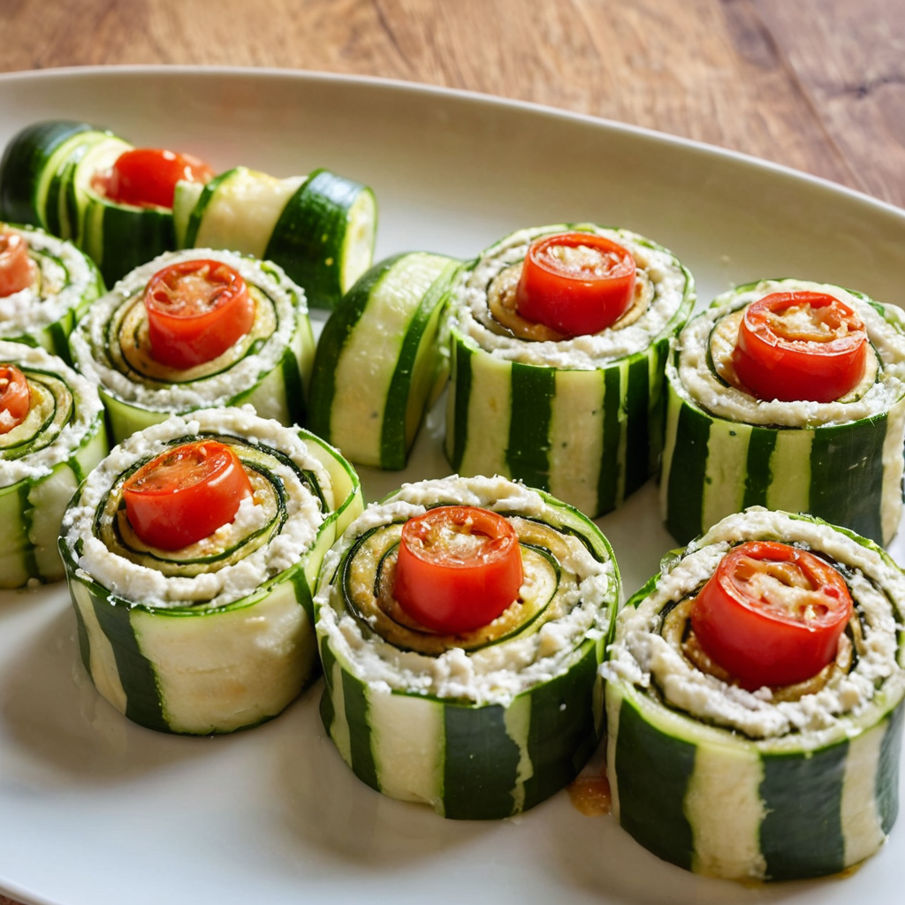

Cukkini roládok ricottával és paradicsommal recept

Hozzávalók:
- 2 közepes cukkini
- 200 g ricotta sajt
- 1 gerezd fokhagyma, apróra vágva
- 4-5 db Friss bazsalikomlevél, apróra vágva
- 1 paradicsom, vékony szeletekre vágva
- Olívaolaj
- Só és frissen őrölt fekete bors ízlés szerint
Elkészítés:
- Melegítsünk elő a sütőt 180°C-ra (350°F).
- Vágjuk a cukkinit hosszában vékony szeletekre. A szeleteket kenjük meg olívaolajjal, majd tegyük őket egy sütőpapírral bélelt tepsire, és süssük kb. 10 percig, amíg enyhén megpuhulnak.
- Közben keverjük össze a ricotta sajtot az apróra vágott fokhagymával és bazsalikomlevéllel egy tálban.
- Vegyük ki a cukkiniszeleteket a sütőből, és hagyjuk őket kicsit kihűlni.
- Egyenként tegyük a cukkiniszeletekre a ricottás keveréket, majd tekerjük fel őket.
- Helyezzük a cukkini roládokat egy tálba, és tegyünk egy-egy szelet paradicsomot mindegyikük tetejére.
- Sózzuk és borsozzuk meg ízlés szerint, majd tegyük vissza a sütőbe és süssük további 5-7 percig, amíg a paradicsom megpuhul és a cukkini teljesen átsül.
- Tálaljuk melegen, és díszítsük friss bazsalikomlevéllel.